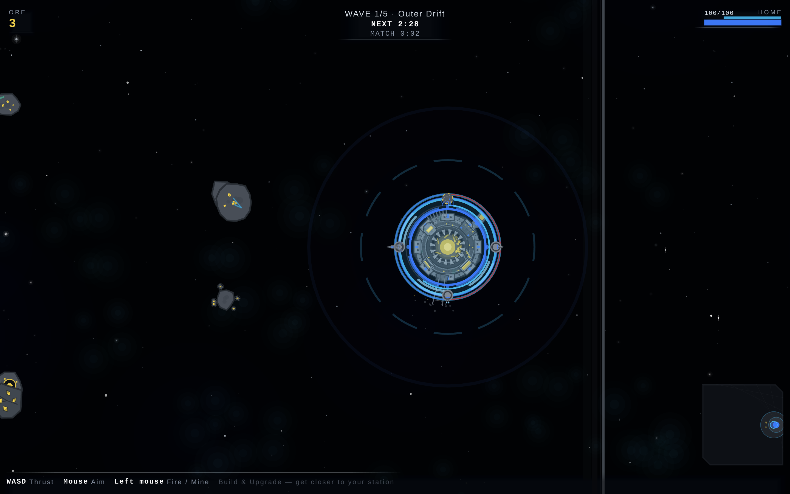
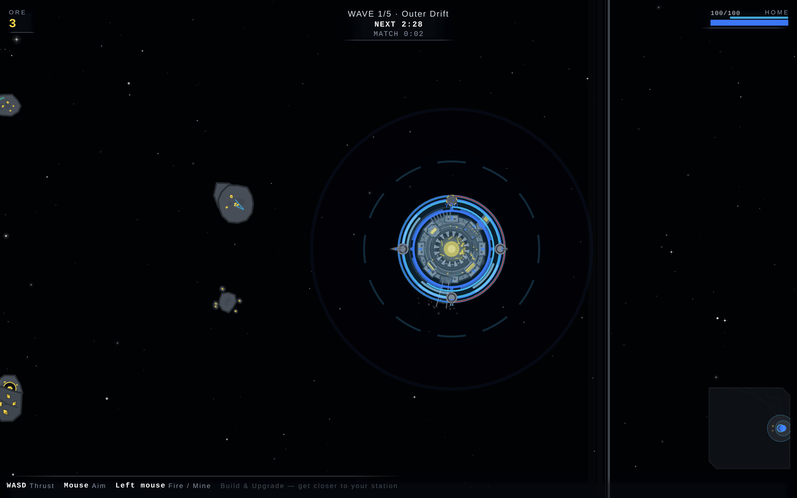
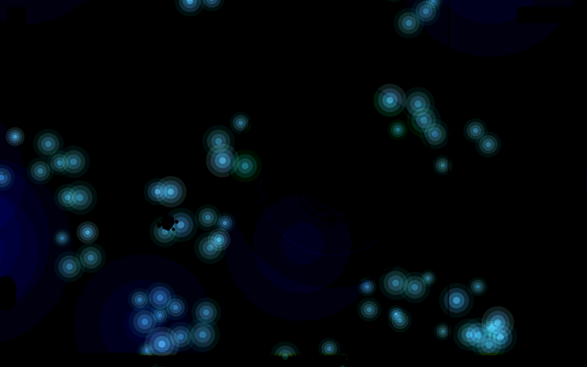
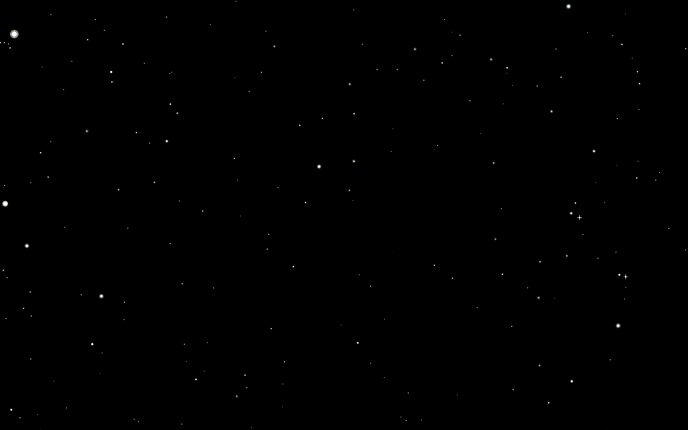

Served bundle dd1d3f5, desktop 1440×900 at dpr 2, map pinned through
localStorage['planet-rush:mapId'] = 'oval'. MAP_NEBULA.oval says
plasmaReef; the live stage answers plasmaReef. The layer names below are read off the
running Pixi scene graph, not off the source: Void.build() writes
void-nebula-<id> from the same nebula.id the sprite is drawn from.
Draw order, back to front: void-ground › void-nebula-plasmaReef › void-stars-deep › void-stars-mid › void-stars-near.

?debug=1&freeze=1, the seeded pinned world. Everything drawing.
void-nebula-plasmaReef hidden. One layer's visibility, nothing else.
void-ground hidden. Floor and the world: what is left when neither sky nor star draws.
registry MAP_NEBULA.oval | plasmaReef |
|---|---|
| rendered (frozen, full VFX) | plasmaReef |
rendered (live ?debug=1) | none — no void-nebula-* layer |
| blend mode | add |
| sky alone — frame touched | 30.1% |
| sky alone — peak Δluma | 15 / 255 |
| sky alone — mean ink (r,g,b) | 0.52, 1.61, 2.76 |
| stars alone — frame touched | 0.2% |